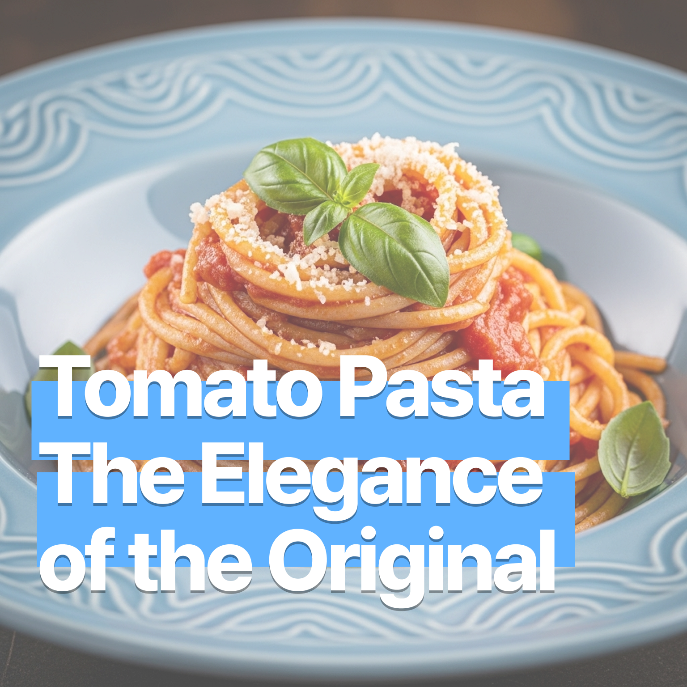

토마토 파스타 – 오리지널의 품격
2025-07-11

토마토 파스타 – 오리지널의 품격
신선한 토마토와 올리브오일, 마늘, 바질이 어우러진 클래식 토마토 파스타는 이탈리아의 정통 감성을 담은 가장 기본이면서도 가장 품격 있는 한 접시입니다. 간단한 재료로 깊은 풍미를 끌어내는 이 레시피는, 집에서도 셰프처럼 요리할 수 있어요.
🛒 재료 소개 (2인분 기준)
- 스파게티 면 160g
- 올리브오일 3큰술
- 마늘 3쪽 (다지거나 슬라이스)
- 양파 ½개 (다진 것)
- 토마토 2개 또는 홀토마토 통조림 1컵
- 바질잎 또는 바질가루 약간
- 소금, 후추 약간
- 파르미지아노 레지아노 치즈 (선택)
- 설탕 ½작은술 (산미 조절용)
🔪 재료 손질
생토마토 사용 시, 끓는 물에 30초 정도 데쳐 껍질을 벗기고 씨를 제거한 후 깍둑썰기하면 소스가 더 부드럽고 깔끔해집니다. 마늘과 양파는 잘게 다지고, 바질은 생잎이면 손으로 찢어 준비합니다. 치즈는 강판에 갈아두면 마지막에 뿌리기 좋아요.
🍳 조리 방법
- 면 삶기
끓는 물에 소금 1큰술을 넣고 스파게티 면을 알단테(약 8~9분)로 삶습니다. 삶은 면은 체에 받쳐 물기를 제거하고, 올리브오일을 살짝 뿌려 섞어둡니다. - 소스 만들기
팬에 올리브오일을 두르고 중불에서 양파를 먼저 볶아 투명해지면 마늘을 넣고 볶아 향을 냅니다. 토마토를 넣고 으깨듯 볶으며 수분을 날려줍니다. 토마토가 부드럽게 으깨지고 소스가 걸쭉해질 때까지 약불로 졸입니다. 소금과 후추는 마지막에 맛을 보며 적절히 조절하세요. 설탕은 토마토의 산미를 부드럽게 해주는 역할을 합니다. 바질을 넣어 향을 더합니다. - 면과 소스 섞기
삶은 면을 팬에 넣고 소스와 잘 버무립니다. 면수는 전분이 녹아 있어 소스와 면을 잘 어우러지게 하고, 너무 뻑뻑한 소스를 부드럽게 만들어줍니다. 조금씩 넣어가며 농도를 맞추세요. - 마무리
접시에 담고 파르미지아노 치즈를 뿌려 마무리합니다. 바질잎이나 방울토마토를 고명으로 올리면 더욱 근사해요.
💡 팁
- 생토마토 대신 홀토마토 통조림을 사용하면 조리 시간이 단축되고 풍미가 진해져요.
- 면수 활용은 소스와 면을 부드럽게 연결해주는 핵심 테크닉입니다.
- 설탕은 소량만 넣어 토마토의 산미를 부드럽게 조절해주는 역할을 합니다.